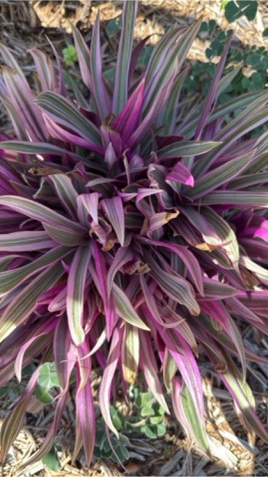

The Story of Moses In The Cradle
At the base of gorgeous green-and-purple leaves, small white flowers rest in stillness inside Moses's purple cups. A child kneels down to take a closer look. “It looks like someone tucked them into bed!”
Bees buzz close, landing in the purple beds. They sip the white flowers' nectar, brushing pollen from one to another “Visitors are welcome here,” says the plant. The child smiles. “So you nurture yourself and you share.” Moses in the Cradle sways gently. “That’s how we grow together.” Community is creating shelter where life can rest, bloom, and shared to everyone!

About This Community Member
Scientific Name: Quercus velutina.
Appearance: Tall tree with dark, ridged bark and shiny green leaves that turn orange-yellow in fall. Produces acorns with scaly cups.
Ecological Role: Provides acorns that feed deer, squirrels, mice, turkeys, and blue jays. Forgotten acorns sprout into new oaks.
Fun Fact: Black Oak bark was once used to make dyes and tannins for leather.
Meet The Rest Of The Team
Plant 2
TKTKTK.

Plant 3
TKTKTK.

Plant 4
TKTKTK.